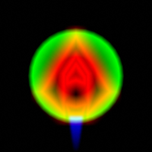

Drawing The Player Ship
In the shadertoy game, the ship is drawn using a signed distance field. That's because you can't load custom textures. Here, we just learned how to bind textures. We still want our textures to contain a gradient (as that is what was used for the neon effect), but now we can draw the ship in a graphics program like Gimp rather than hand-coding lines as a bunch of coordinates.
Here's our ship texture:

You may notice it's a little different to the ship we're trying to draw. That's because I want to be able to turn the engine on and off. I also think a "collision shield" effect could be quite nice - to let the player know when they hit things. For this reason, I've put three things on different channels:
- Red Channel: the ship
- Blue Channel: the ship's engine flame
- Green Channel: the ship's collision shield
All of these are distance-field-esque, allowing the "blur" to be tuurned into a nice neon glow.
The fragment shader that does the rendering isn't too complex:
#version 300 es
precision mediump float;
in vec2 uv;
out vec4 FragColor;
uniform sampler2D ship_texture;
uniform float ship_engine;
uniform vec4 ship_color;
vec4 neon(float sdf, vec4 color, float glow_width) {
float ramp = clamp(1.0 - sdf / glow_width, 0.0, 1.0);
vec4 outp = vec4(0.0);
ramp = ramp * ramp;
outp += pow(color, vec4(4.0)) * ramp;
ramp = ramp * ramp;
outp += color * ramp;
ramp = ramp * ramp;
outp += vec4(1.0) * ramp;
return outp;
}
void main() {
vec4 raw_sprite = texture(ship_texture, uv * 0.5 - 0.5);
FragColor = neon(1.0 - raw_sprite.r, ship_color, 1.0);
vec4 engine_color = ship_engine * ship_color;
FragColor += neon(1.0 - raw_sprite.b, engine_color, 1.0) * ship_engine;
}
You should be able to spot how the shader separates the engine flare from the ship, and how it generates the neon gradient of colors.
The main challenge here is drawing the player in the right place at the right size. The vertex shader needs to consider the camera's transformation, the aspect ratio of the canvas, and the transformation of the player's sprite.
To achieve peak runtime efficiency, we should compute/combine these matrices on the CPU, and then load a single transformation matrix to the GPU (which then processes it for each vertex). However, if we wanted to do that we'd need to have matrix maths in Rust. Sure, there are crates for that but it would increase the binary size and require more data massaging. So instead we will do all the matrix maths inside the shader. Note that we can only do this because we don't have any object hierarchies. If you had an object hierarchy you would need to do math on the CPU to find the final location of the objects.
So what math needs to occur inside the shader? We need to end up with a matrix that takes positions in sprite-local space and converts them into canvas-clip space.
I find figuring this out much easier with a diagram:

Using the One true naming
scheme
for matrices makes this simpler. If we the matrix indicating the
"sprite transform" matrix world_to_camera (because it represents the
transformation from world space into sprite space), then we can invert
it to get camera_to_world.
So we end up with the matrix chain:
#version 300 es
precision mediump float;
in vec4 aVertexPosition;
uniform mat3 world_to_camera;
uniform mat3 world_to_sprite;
uniform mat3 camera_to_clipspace; // Includes canvas resolution/aspect ratio
out vec2 uv;
void main() {
mat3 camera_to_world = inverse(world_to_camera);
mat3 clipspace_to_camera = inverse(camera_to_clipspace);
mat3 camera_to_sprite = camera_to_world * world_to_sprite;
mat3 sprite_to_clipspace = clipspace_to_camera * camera_to_sprite;
vec2 pos = (sprite_to_clipspace * vec3(aVertexPosition.xy, 1.0)).xy;
uv = aVertexPosition.xy;
gl_Position = vec4(pos, 0.0, 1.0);
}
Now, obviously there is a little bit more to getting it to render than just the shaders. For example, the object representing the sprite is needs to contain all the new uniforms:
#![allow(unused)] fn main() { pub struct ShipSprite { position_buffer: WebGlBuffer, program: WebGlProgram, attrib_vertex_positions: u32, uniform_ship_engine: Option<WebGlUniformLocation>, uniform_ship_texture: Option<WebGlUniformLocation>, uniform_ship_color: Option<WebGlUniformLocation>, uniform_world_to_camera: Option<WebGlUniformLocation>, uniform_world_to_sprite: Option<WebGlUniformLocation>, uniform_camera_to_clipspace: Option<WebGlUniformLocation>, pub ship_texture: WebGlTexture, pub ship_color: (f32, f32, f32, f32), pub ship_engine: f32, pub world_to_camera: [f32; 9], pub world_to_sprite: [f32; 9], pub camera_to_clipspace: [f32; 9], } }
And the uniforms have to be set at render-time:
#![allow(unused)] fn main() { gl.uniform_matrix3fv_with_f32_array( self.uniform_world_to_sprite.as_ref(), true, &self.world_to_sprite ); // etc. }
The various transformation matrices also have to be generated somehow.
As mentioned before, I didn't want to pull in a full crate like glam
or nalgebra, so instead I wrote a small module transform.rs
containing:
#![allow(unused)] fn main() { /// A non-generic transform in 2D. Only supports rotations translations /// and a uniform scaling. pub struct Transform2d { pub x: f32, pub y: f32, pub rot: f32, pub scale: f32, } impl Transform2d { pub fn new(x: f32, y: f32, rot: f32, scale: f32) -> Self { Self { x, y, rot, scale } } pub fn to_mat3_array(&self) -> [f32; 9] { let c = f32::cos(self.rot) * self.scale; let s = f32::sin(self.rot) * self.scale; [c, -s, self.x, s, c, self.y, 0.0, 0.0, 1.0] } } }
Finally we have to set everything an invoke render. The nice thing about working functionally here is that we can invoke render multiple times after setting different parameters. As such we can render two ships with one "ship sprite":
#![allow(unused)] fn main() { pub fn animation_frame(&mut self) { let now = window().unwrap().performance().unwrap().now(); let time = (now / 1000.0) as f32; self.check_resize(); self.gl.clear( WebGl2RenderingContext::COLOR_BUFFER_BIT | WebGl2RenderingContext::DEPTH_BUFFER_BIT, ); let mut ship_sprite_transform = Transform2d::new(0.0, 0.0, f32::sin(time), 0.1); let camera_transform = Transform2d::new(0.0, 0.0, 0.0, 1.0 / self.canvas_resolution.0 as f32); self.ship_sprite.world_to_camera = camera_transform.to_mat3_array(); self.ship_sprite.camera_to_clipspace = [ self.canvas_resolution.0 as f32, 0.0, 0.0, 0.0, self.canvas_resolution.1 as f32, 0.0, 0.0, 0.0, 1.0, ]; // Render the first ship self.ship_sprite.world_to_sprite = ship_sprite_transform.to_mat3_array(); self.ship_sprite.ship_color = (0.0, 0.5, 1.0, 1.0); self.ship_sprite.ship_engine = 0.0; self.ship_sprite.render(&self.gl); // Render another ship ship_sprite_transform.x = f32::sin(time) * 0.5; ship_sprite_transform.y = f32::cos(time) * 0.5; ship_sprite_transform.rot = - std::f32::consts::PI / 2.0 - time; self.ship_sprite.world_to_sprite = ship_sprite_transform.to_mat3_array(); self.ship_sprite.ship_color = (1.0, 0.5, 0.0, 1.0); self.ship_sprite.ship_engine = 1.0; self.ship_sprite.render(&self.gl); } }
Proof that it all works: